WWDC 2023: Discover String Catalogs
Find hereafter a detailed summary of the above named video that belongs to a taxonomy of some WWDC footages.
The original video is available on the Apple official website (session 10155).
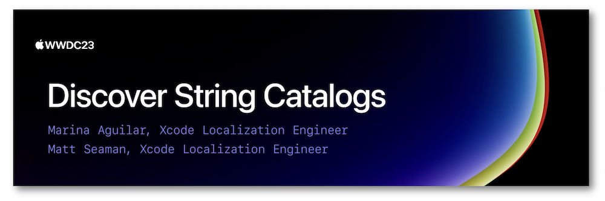
"Discover how Xcode 15 makes it easy to localize your app by managing all of your strings in one place. We'll show you how to extract, edit, export, and build strings in your project using String Catalogs. We'll also share how you can adopt String Catalogs in existing projects at your own pace by choosing which files to migrate."
Hereafter, the underlined elements lead directly to the playback of the WWDC video at the appropriate moment.
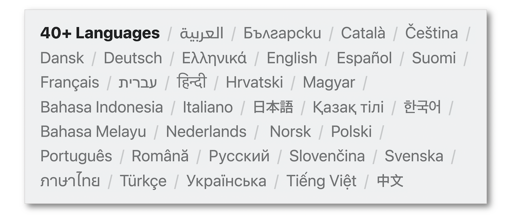
Overview #
In order to handle the localization in one single place, the String Catalogs are introduced in Xcode 15 to replace the .strings and .stringsdict files in future releases.
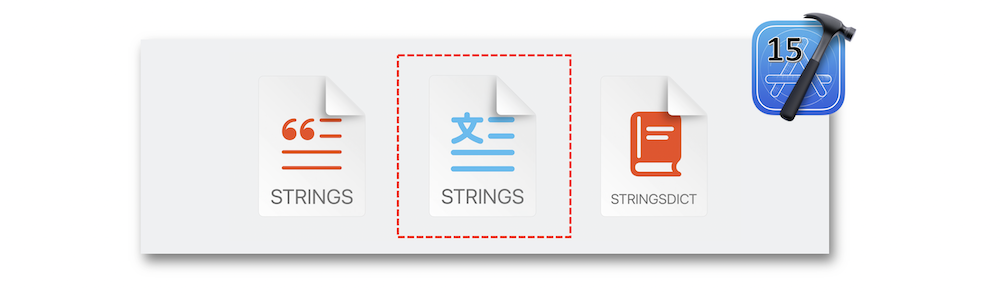
All the added strings are automatically extracted by Xcode and the multiplatforms localization is now streamlined for a simpler usage.
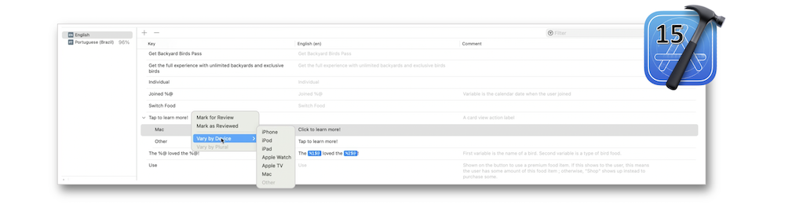
Localizable strings #
Definition #
A text wrapper to be translated into all of the supported languages in an app defines a localizable string composed of four components.
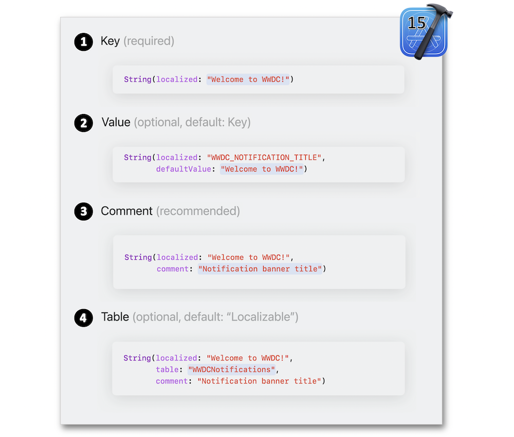
String tables #
A string table is a directory to which each localizable string belongs and that contains .strings and possibly .stringsdict files inside a lproj directory linked to a specific language.
This former string table format is now replaced by a single String Catalog that gathers all the localized information therein and that can also be multiplied using the same keys.
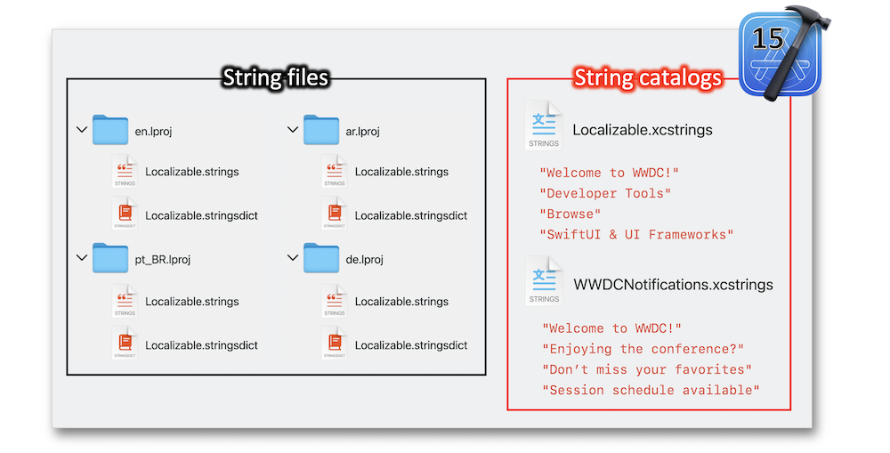
Identification #
Xcode can easily find the localizable strings in many places to automatically update the String Catalogs.
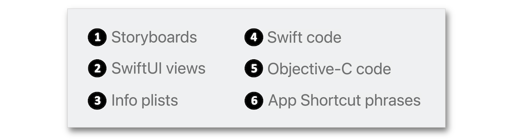
With the Interface Builder, each string is automatically identified as localizable and updated by Xcode in the String Catalog at each build process.
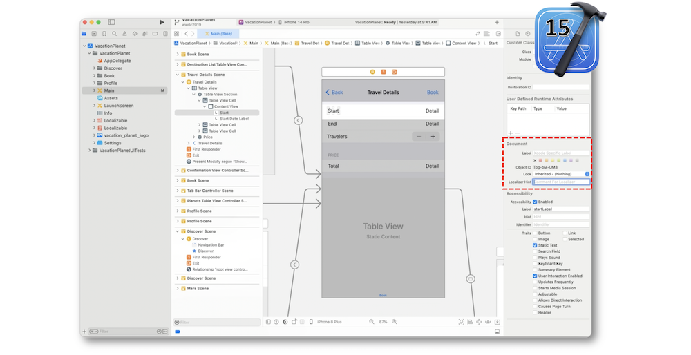
Defined as a LocalizedStringKey type that conforms to the ExpressibleByStringLiteral protocol or written as a literal inside a view, a string is automatically considered localizable.
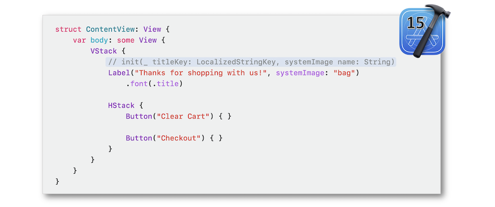
LocalizedStringResource is the recommended type for performing the localizable string lookup at a later time.
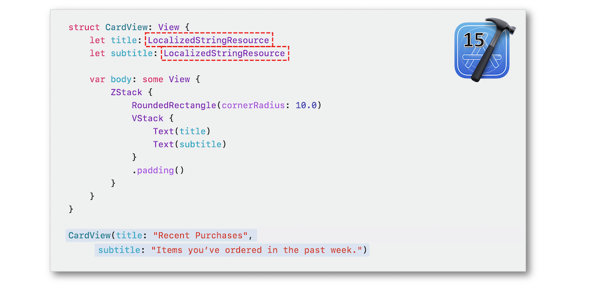
An empty InfoPlist.xcstrings file added to the sought target will permit Xcode to fulfill the String Catalogs with the appropriate elements at each build process.
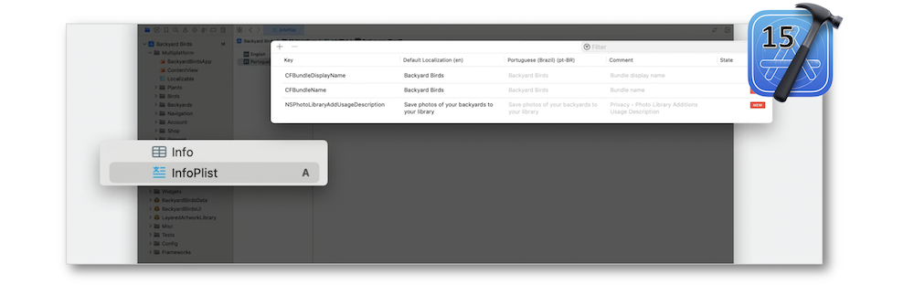
Both the native initializers for literals and the LocalizedStringResource type give rise to an automatic localization recognition by the system.
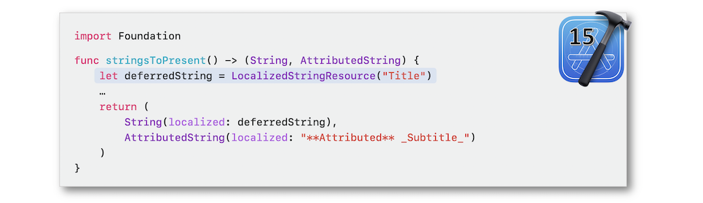
To ensure the localizable strings' extraction, the Use Compiler to Extract Swift Strings build setting should be enabled.
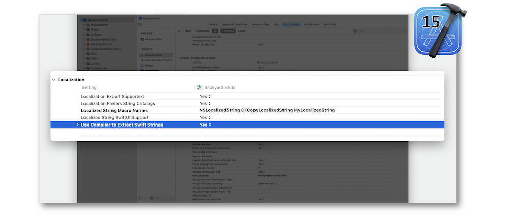
Native or custom macros in ObjC lead to an automatic recognition of localization.
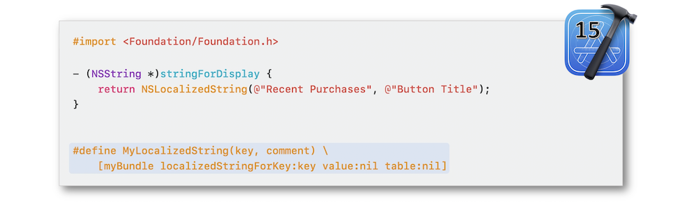
While using this same rationale for the C code, it's crucial to define the macros in the Localized String Macro Names build setting.
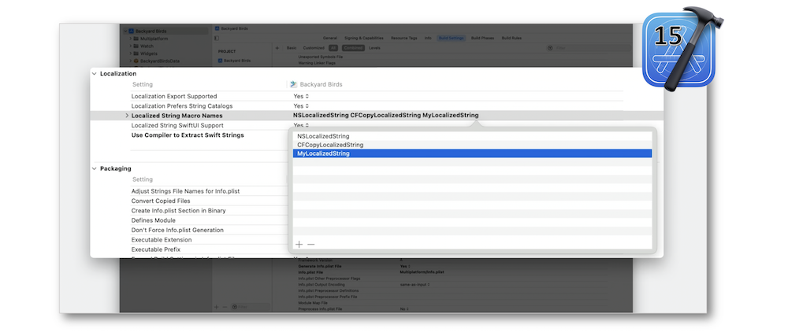
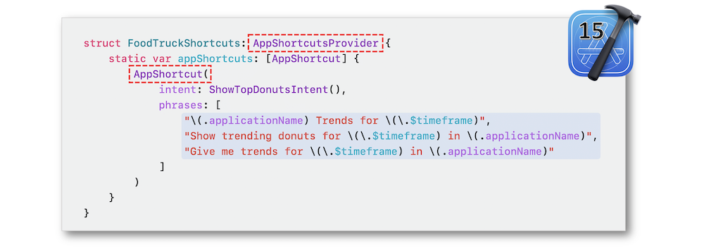
Synchronization #
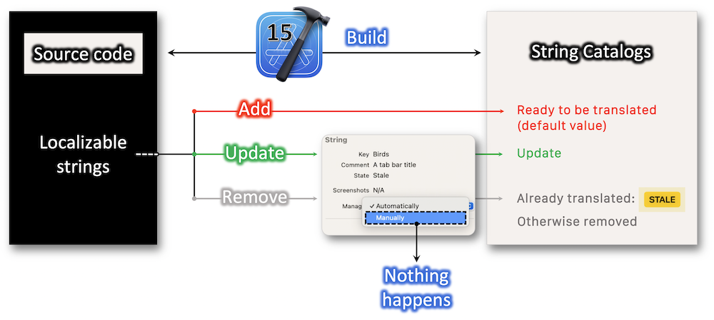
String Catalog Editor #
Each localizable string in this editor has a state indicator for highlighting the translation overall situation.
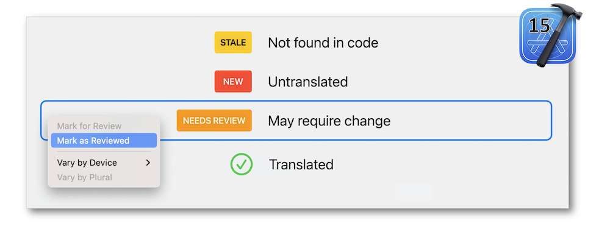
Pluralization #
When localization comes in, it's important to consider the variation of a string based on the value of its prefixed number.
A support for string variation workflows is part of the String Catalog Editor to solve this problem.
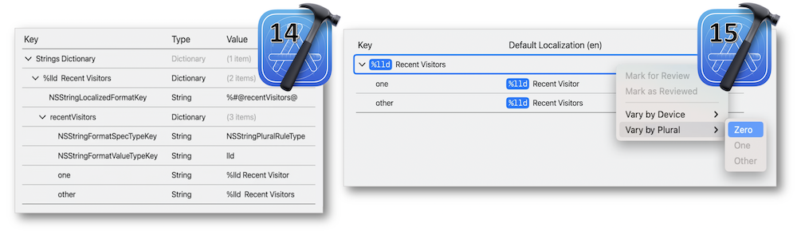
When multiple variables are combined for defining a plural strings situation, substitutions become the easy way to deal with it.
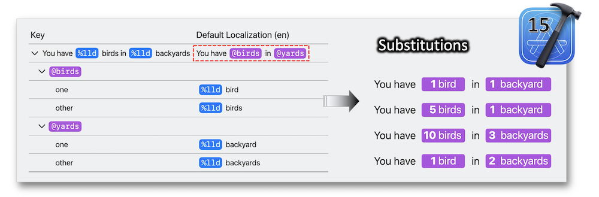
Both the format specifier and the position of the argument to use for the number are pointed out through the Xcode inspector.
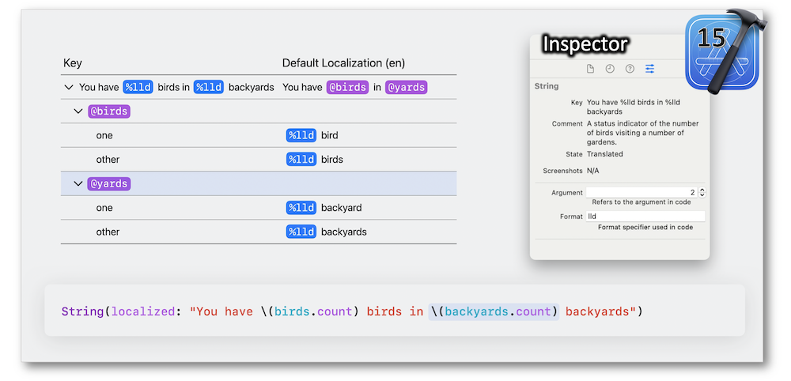
Export & import #
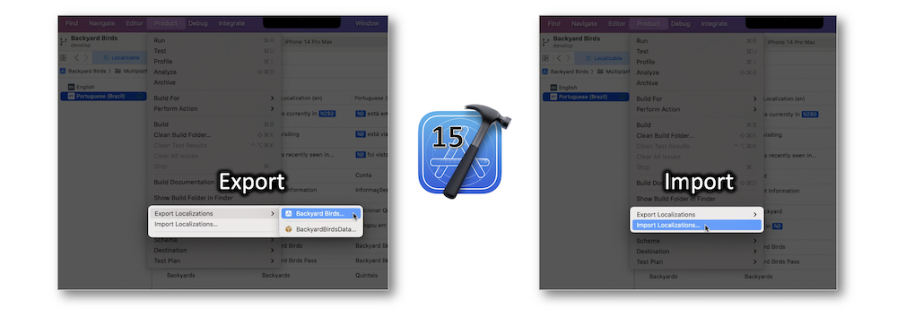
The exported localizable content is included in a package called a Localization Catalog that contains a specific XLIFF file whose format conforms to the String Catalog's if the Localization Prefers String Catalogs Xcode build setting is enabled.
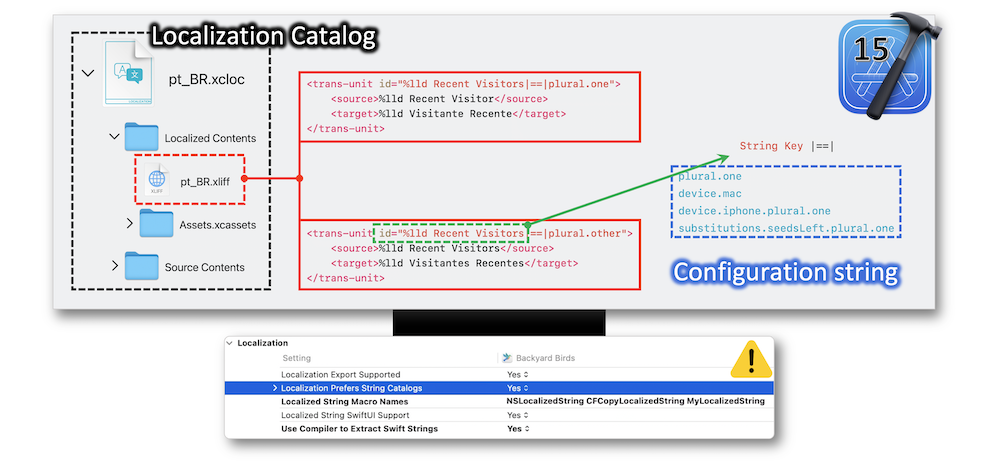
Build & migrate #
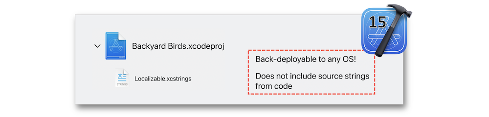
Since String Catalogs coexist with the .strings and .stringsdict files, the shift to this new configuration may start at any time.